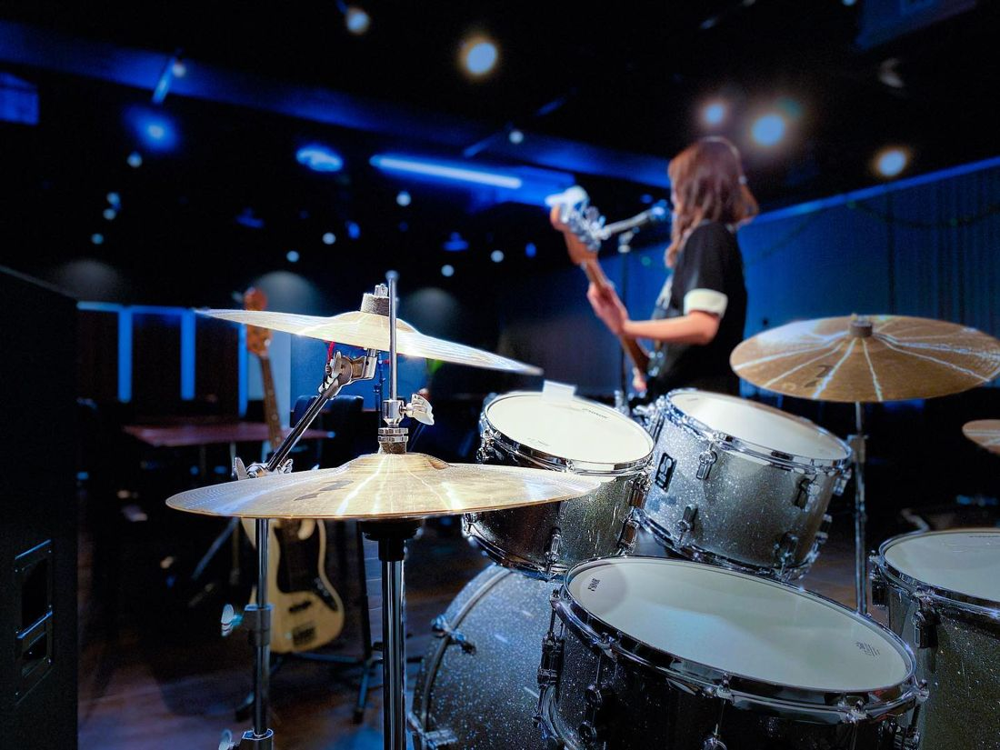
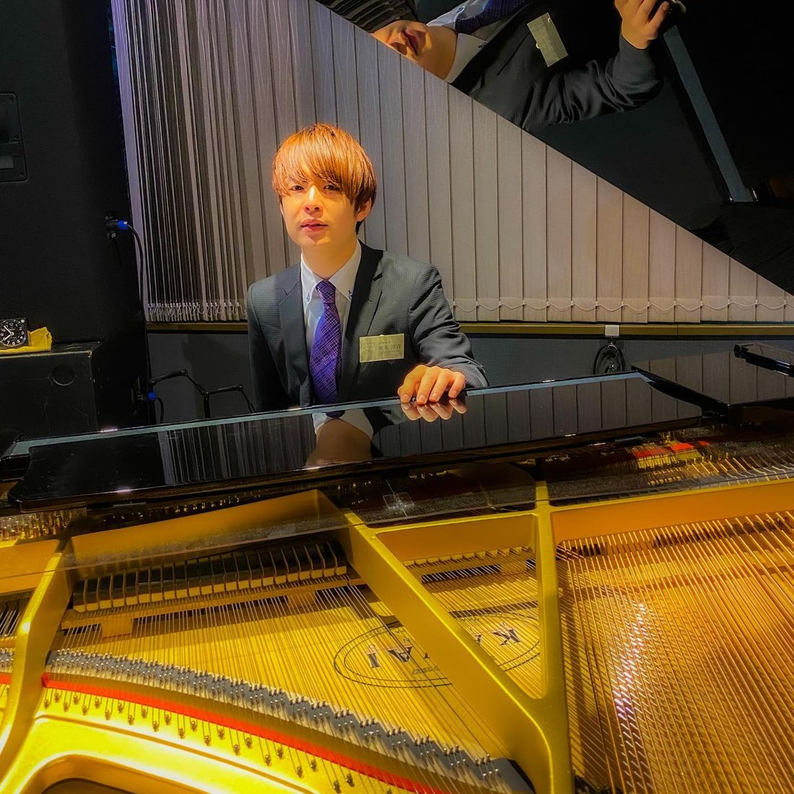

Join Our Stage
これから活躍する
若いミュージシャンの、
試練の場として。
店主が店名に込めた想いのとおり、52番街は若いジャズミュージシャンが本番を重ねる場所です。所属ピアニストとして毎晩演奏する、または自分たちのライブを開催する。2つの関わり方があります。

Wanted
所属ピアニストになる
音大・芸大でピアノを専攻している在学生・卒業生の方へ。月1日・1時間から、ピアノバーのステージで本番経験を積めます。
時給¥2,000〜22時以降 2,500円〜
さらにミュージックチャージ
全額バック
全額バック
奨学金返還支援・社員登用・借り上げ社宅制度あり｜接待を伴う接客はありません

Host Your Live
52番街でライブを開催する
当店で開催されるライブには「当店主催」と「出演者主催」があります。出演者主催の場合、会場・オペレーターをご用意し、チケットの委託販売も承ります。
| チケットプラン | ステージプラン | |
|---|---|---|
| 向いている方 | 集客に自信がない・初めての方 | 集客力があり、チケット収入を最大化したい方 |
| お申込み時 | 最低会場運営手数料 23,100円（14枚分） | 会場使用料 平日 8,800円／土休日 11,000円（1時間・4時間以上） |
| チケット収入 | 15枚目以降、1枚1,650円を差し引いた全額をお支払い | チケット代金の全額をお支払い |
| 時間 | 搬入9:00〜撤収21:00の間で4時間以内（延長 平日8,800円／土休日11,000円/h） | 搬入9:00〜撤収21:00の間で4時間以上 |
含まれるもの
来場客全員分のチャージ料、グランドピアノ以外の設備機材、機材オペレーター1名、施設管理者1名
オプション
グランドピアノ使用料 33,000円／事前調律 33,000円／ディナー・フリードリンク付きプラン
共通事項
受託販売チケット手数料 880円/枚。来場者はワンオーダー＋サービス料10%。著作権料は主催者がJASRACへ。拡張ピアノ奏法は不可
Equipment
主な機材
- グランドピアノ（A=441Hz）
- KAWAI GL-10／YAMAHA CG1
- キーボード
- YAMAHA CP88／STAGEA ELS-02C
- ドラム
- SONOR AQ2 STAGE 22"
- アンプ
- Roland JC-120G／Ampeg SVT-450HJ ほか
- ミキサー
- Soundcraft Ui24R ×2（48ch）
- 配信
- PTZカメラ×6／ATEM Mini Extreme ISO